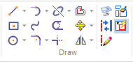
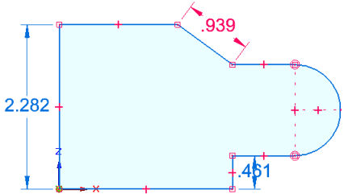
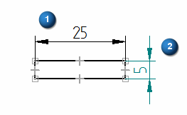
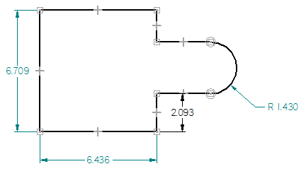
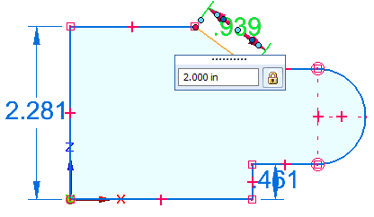
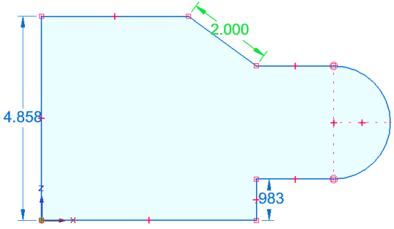

Scale a sketch automatically
Driving dimensions control the size and location of a sketch. The Auto-Scale Sketch command automatically scales a 2D or 3D sketch that contains just one driving dimension. When you place the first driving dimension that measures distance, radial, diameter, or symmetric diameter, and then you change its value, the whole sketch is scaled proportionally. You can scale the sketch by increasing or decreasing the value of the driving dimension as many times as needed. Auto-scaling continues until you deselect the option on the ribbon or add a second driving dimension.
Here are some ways you can use auto-scaling.
-
Draw a sketch similar to the desired shape, without worrying about proportions. You can add driven dimensions to define the sketch initially, but it must not contain more than one driving dimension. When you are done with the basic shape, edit the driving dimension to scale the entire sketch.
-
You can create an ordered sketch, derive a feature from that sketch, and then auto-scale the sketch at a later time by adding a driving dimension. The feature still reacts to sketch auto scaling.
-
Synchronous sketches can have multiple regions in the same sketch. Editing the driving dimension auto-scales all of the regions of that sketch.
-
On the Home tab or the Sketching tab→Draw group, verify the Auto-Scale Sketch command is selected as shown below.

The Auto-Scale Sketch option is available when sketching in synchronous and ordered modes in the modeling environments, and when drawing in the draft environment. It is not available when creating 3D sketches using the commands on the 3D Sketching tab.
-
Draw the sketch elements with Maintain Relationships=On, or apply the appropriate sketch relationships as you normally do.
-
Use the Smart Dimension command or another dimension command to add one driving dimension to control the distance, radius, or diameter of the sketch. You also can add driven dimensions.
The color of a dimension identifies its type and its behavior when you edit it.
Example:This sketch is a synchronous part sketch. The default color of a driving dimension is red. Non-driving dimensions (driven) are blue.

Example:In the Draft environment, driving (locked) dimensions are black (1), and unlocked (driven) dimensions are dark cyan (2).


-
Edit the value of the driving dimension and press Enter.
For more information, see Edit a 2D dimension (sketch, profile, draft).

The entire sketch is scaled based on your edit of the driving dimension.

-
Some open sketches can be scaled. Examples include a B-spline curve or a synchronous sketch that does not form a region. If the sketch cannot be solved, the edit is applied only to the element to which the dimension is attached.
-
Auto-Scale Sketch is on by default in new files. Like the Maintain Relationships and Relationship Handles options, you can turn it off and on at any time while you sketch. You can set this preference separately for draft and for modeling environments.